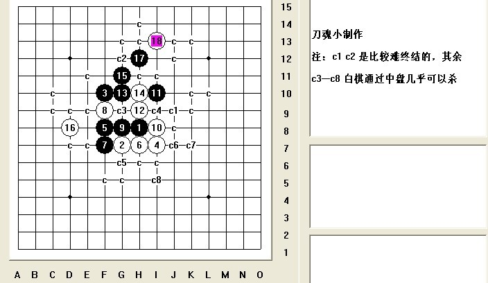

[互动棋谱]流星的一个黑15接近终结谱
#1 [互动棋谱]流星的一个黑15接近终结谱作者：刀魂 发表时间：2009-4-23 11:54:57

 刀魂 流星黑15败 终结谱 16是关键.rar
刀魂 流星黑15败 终结谱 16是关键.rar注：其余几个黑 弱点，就没有去终结他了，白棋可以再中盘做杀他。。。
［此帖子已被 刀魂 在 2009-4-23 11:55:34 编辑过］
［此帖子已被 刀魂 在 2009-4-23 11:57:05 编辑过］
［此帖子已被 茗弈小刀 在 2009-4-23 12:45:39 编辑过］
#2 Re:流星的一个黑15终结谱作者：行云流水 发表时间：2009-4-23 12:12:50
仔细看了一下，其中没有终结的地方不少。用“终结谱”作为标题不仅不慎重，也未免有误导之嫌，请尽快修正！［此帖子已被 行云流水 在 2009-4-23 12:14:07 编辑过］
［ 茗弈小刀 于 2009-4-24 11:36:29 时花20金币送鲜花一朵］
#3 Re:流星的一个黑15终结谱作者：学生刀 发表时间：2009-4-23 12:23:11
是终结者直接扫的吧 麻烦点没搞不能叫终结#4 Re:[互动棋谱]流星的一个黑15接近终结谱作者：茗弈小刀 发表时间：2009-4-23 12:32:18
谢谢顾老师提醒，已经修正。#5 Re:[互动棋谱]流星的一个黑15接近终结谱作者：茗弈小刀 发表时间：2009-4-23 12:38:49
刀魂注意下，以后C2 C3等这些点怎么杀要标出来。最好再补充下！
［此帖子已被 茗弈小刀 在 2009-4-23 12:46:11 编辑过］
#6 Re:Re:流星的一个黑15终结谱作者：刀魂 发表时间：2009-4-23 12:45:03
引用：
原文由 行云流水 发表于 2009-4-23 12:12:50 :
仔细看了一下，其中没有终结的地方不少。用“终结谱”作为标题不仅不慎重，也未免有误导之嫌，请尽快修正！［此帖子已被 行云流水 在 2009-4-23 12:14:07 编辑过］
我不是说了嘛，其余黑点，终结没多大意义，，，因为白棋太容易 控制局面和做杀了，，，不信你可以找我来试一试。。。随时恭
候大驾。。。
［此帖子已被 刀魂 在 2009-4-23 12:47:37 编辑过］
［此帖子已被 刀魂 在 2009-4-23 12:49:10 编辑过］
［此帖子已被 刀魂 在 2009-4-23 12:52:32 编辑过］
#7 Re:[互动棋谱]流星的一个黑15接近终结谱作者：忧郁的双眼 发表时间：2009-4-23 13:00:50
那你可以说最强应变终结#8 Re:[互动棋谱]流星的一个黑15接近终结谱作者：雅典娜 发表时间：2009-4-23 16:21:19
就是准终结就是等于没终结，呵呵！象准三星级就不是三星级！#9 Re:[互动棋谱]流星的一个黑15接近终结谱作者：刀魂 发表时间：2009-4-23 16:25:10
,,,给你们 提供了这么好的线路，一声谢谢都没有，，，以后不发谱了，，，对别人吹毛求疵，，，#10 Re:Re:[互动棋谱]流星的一个黑15接近终结谱作者：屏蔽 发表时间：2009-4-23 17:08:01
引用：
原文由 刀魂 发表于 2009-4-23 16:25:10 :
汗~其实大家没这个意思。
首先这并非终结谱，而所谓接近终结是个什么意思，大家心知肚明；
其次，部分强点的变化比较少，这无形之间折损了棋谱的价值；
最后，如果真的是想走提供一个好思路的路线的话，不妨写成局面分析一类的东西，而不一定以终结谱的形式弄出来，那样既有路线又有要点，或许你可以参看一下李洪斌老师的百度空间。
希望刀魂再接再厉嗯。
#11 Re:[互动棋谱]流星的一个黑15接近终结谱作者：屏蔽 发表时间：2009-4-23 17:12:07
还有一点……虽然我不用软件也不做谱，但我知道黑棋有些进攻点或无意义的交换会让终结谱多出很多无用的容量。
以此为例，做终结谱的话还是应该选取一个白棋优势，黑棋比较接近纯防守的局面吧，这样容量也会小很多，在此之前，不妨先人为地进行一些比较强的应对，再进行终结，可能性该大一些吧。
---------------
刚才查了一下，有些东西还能做得更细致、更完善，比如下面这个变化：
=======上图对应的爱五子棋谱代码如下，以便你拆解：========
h8i9j6g9j8h9j9j7i8g8g6h7i6h6i5l8h4g3f7i7g7f9e9g10d11e8h11f8h10e5
======================================================
这个30是否必胜我没有验证，也不知道这个点是怎么算出来的，但一般而言我们不会放弃这么简单的一个VCT的：
=======上图对应的爱五子棋谱代码如下，以便你拆解：========
h8i9j6g9j8h9j9j7i8g8g6h7i6h6i5l8h4g3f7i7g7f9e9g10d11e8h11f8h10d8c8d7c6d6d5f4h2e7c5d10d9c7e5a7
======================================================
如果你有比较丰富的经验的话就会知道这是一盘中村茂和吉泽众三郎的实战对局。
［此帖子已被 屏蔽 在 2009-4-23 17:24:41 编辑过］
［ 岳麓小棋后 于 2009-4-24 13:07:08 时花20金币送鲜花一朵］
#12 Re:[互动棋谱]流星的一个黑15接近终结谱作者：刀魂 发表时间：2009-4-23 17:22:10
。。。#13 Re:[互动棋谱]流星的一个黑15接近终结谱作者：安娜制作所 发表时间：2009-4-24 11:29:14

#14 Re:[互动棋谱]流星的一个黑15接近终结谱作者：学生刀 发表时间：2009-4-24 12:27:01
=======上图对应的爱五子棋谱代码如下，以便你拆解：========
h8i9j6g9j8h9j9j7i8g8g6h7i6h6i5l8h4g3f7i7g7f9e9g10d11e8h11i10h10i11
======================================================
各种必胜
#15 Re:[互动棋谱]流星的一个黑15接近终结谱作者：行云流水 发表时间：2009-4-24 12:59:05
技术研究最忌讳的就是浮躁的心态，和无法正视他人不同意见或批评。#16 Re:Re:[互动棋谱]流星的一个黑15接近终结谱作者：刀魂 发表时间：2009-4-24 13:24:43
引用：
原文由 行云流水 发表于 2009-4-24 12:59:05 :
技术研究最忌讳的就是浮躁的心态，和无法正视他人不同意见或批评。